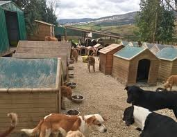
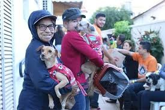
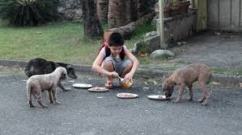
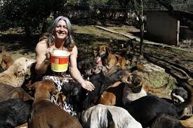
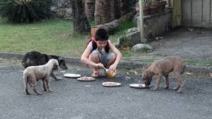
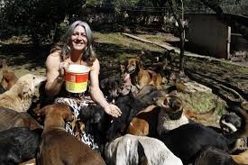

Voluntariado
Seja parte da nossa equipe de voluntários e transforme a vida de animais em situação de abandono. Existem diversas formas de contribuir, de acordo com suas habilidades e disponibilidade.
Cuidados com os Animais
Auxilie na alimentação, higiene, socialização e cuidados gerais dos cães resgatados pela ONG.

Manutenção do Abrigo
Ajude na limpeza, organização e manutenção das instalações, garantindo um ambiente seguro e acolhedor.

Campanhas de Conscientização
Participe de ações educativas sobre guarda responsável, adoção e bem-estar animal na comunidade.
Para se tornar voluntário, preencha nosso cadastro clicando aqui e entraremos em contato com você.
 


